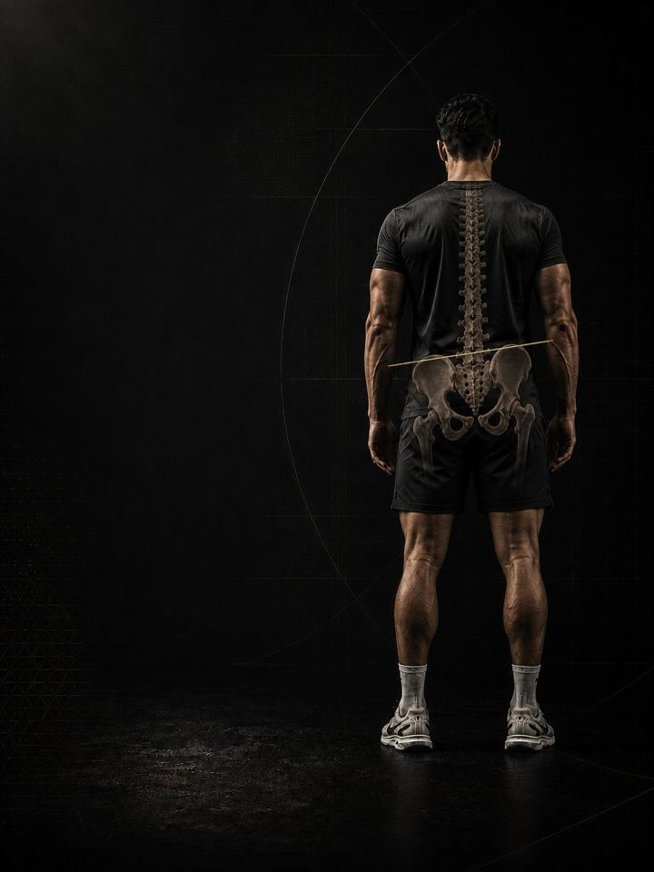

الميلان الجانبي للحوض
اجعل الحوض مستويًا ببناء الجهة التي تتراخى، وتخفيف الحمل عن الجهة التي تعوّض.
- مناسب لـكل من لديه ورك أعلى من الآخر، أو ألم في جهة واحدة من أسفل الظهر
- الجدولروتين يومي مدته 10–15 دقيقة، و3 أيام قوة في الأسبوع
- المعداتالروتين اليومي يحتاج إلى سجادة وشريط مطاطي. أيام القوة تحتاج إلى نادٍ متكامل.
- الصيغةملف PDF للهاتف، وكل تمرين مرتبط بفيديو توضيحي
لماذا يبدأ الورك المرتفع بالألم
أحد الوركين أعلى من الآخر. ربما لاحظت ذلك في صورة، أو في المرآة، أو في أن إحدى ساقَي البنطال تبدو دائمًا أطول. أو ربما لا تعرفه إلا على شكل ألم في جهة واحدة من الظهر لا تجد له تفسيرًا.
نادرًا ما يكون الميلان الجانبي مشكلة في العظام. فهو عند معظم الناس مشكلة تحكّم بين الجهتين. تتوقّف الأرداف في إحدى الجهتين عن إبقاء الحوض مستويًا، فتتولّى العضلة الموجودة في جانب أسفل الظهر المهمة، ثم ترسّخ ساعات الوقوف على ساق واحدة والجلوس على ورك واحد والحمل على كتف واحدة هذا النمط.
كل الناس تقريبًا غير متماثلين قليلًا، والفرق البسيط وحده ليس تشخيصًا. كثيرون يبدو حوضهم مستويًا ويتألّمون، وكثيرون حوضهم مائل ولا يتألّمون أبدًا. المهم هو: هل تستطيع إبقاء الحوض مستويًا عندما تطلب منه ذلك، وكم من يومك يقع فيه الحمل على جهة واحدة. يدرّب هذا البرنامج الجهة التي تخلّت عن دورها، ويُرخي الجهة التي تولّته، ويعيد بناء العادات التي تستمر في إعادة الميلان.
أسبوعك
روتين يومي قصير، وثلاثة أيام قوة في النادي. أي ثلاثة أيام تصلح، ما دامت غير متتالية. هذا مثال واحد:
| الأحد | الاثنين | الثلاثاء | الأربعاء | الخميس | الجمعة | السبت |
|---|---|---|---|---|---|---|
| اليوم 1 + الروتين اليومي | الروتين اليومي | اليوم 2 + الروتين اليومي | الروتين اليومي | اليوم 3 + الروتين اليومي | الروتين اليومي | الروتين اليومي |
كيف يسير البرنامج:
- الاختبار أولًا. أربعة اختبارات قبل الأسبوع 1، تُعاد بعد الأسبوعين 3 و6. سجّل أي جهة هي المرتفعة، فكل ما بعدها يُبنى على ذلك.
- الروتين اليومي، 10–15 دقيقة. سبع حركات، كل يوم. وفي أيام القوة يُعدّ هو الإحماء أيضًا.
- أيام القوة. اليوم 1 ثم 2 ثم 3، بالترتيب، مع التركيز على القوة بين الجهتين.
الأنماط الخمسة وراء معظم آلام الميلان الجانبي للحوض
هذه الأنماط الخمسة هي ما يحوّل فرقًا غير مؤذٍ إلى ألم في جهة واحدة. ومعظم الناس يجدون أنفسهم في أكثر من نمط واحد. يدرّب البرنامج الأنماط الخمسة معًا.
-
ضعف الأرداف الجانبية في جهة واحدة. للعضلة الموجودة في جانب الورك مهمة رئيسية واحدة أثناء الوقوف والمشي: منع الجهة المقابلة من الحوض من الهبوط. وعندما تتعب في إحدى الجهتين، يهبط الحوض مع كل خطوة وعلى أسفل الظهر أن يلتقطه، آلاف المرات في اليوم. في البرنامج: فتح الورك مستلقيًا على الجانب، رفع الحوض، المشي الجانبي
-
فرط عمل جانب أسفل الظهر (العضلة المربعة القطنية). هذه العضلة الممتدة من الضلع الأخير إلى الحوض ترفع الورك عندما لا تثبّته الأرداف. فينتهي بها الأمر قصيرة وعاملة باستمرار في جهة واحدة، وهذا بالضبط ما يشبهه ألم أسفل الظهر الممتد كالحزام في جهة واحدة. في البرنامج: إطالة العضلة المربعة القطنية، الميل الجانبي، تمارين التنفّس لإعادة الضبط
-
الوقوف والجلوس على جهة واحدة. نقل الوزن إلى ساق واحدة، والجلوس على قدم واحدة، والقيادة والمحفظة تحت أحد الوركين، وحمل الحقيبة دائمًا على الكتف نفسها. لا شيء من ذلك خطير لدقيقة، لكنه كله يتراكم على مدى ثماني ساعات. في البرنامج: الوقوف على ساقين، تمارين الحمل
-
قِصر الفخذ الداخلي وجانب الجسم. في جهة الورك المرتفع يبقى الفخذ الداخلي وجانب الجسم في وضع قصير باستمرار. يختفي مدى الحركة بهدوء، ويفقد الحوض إمكانية الاستواء حتى عندما تكون الأرداف مستعدة. في البرنامج: إطالة العضلات الضامّة، سكوات القوزاق، انسيابية الورك 90-90
-
عدم تماثل القدمين والقوسين. القوس الذي ينهار أكثر في إحدى القدمين يجعل تلك الساق تعمل كأنها أقصر، فيهبط الحوض لملاقاتها. هذا هو النمط الذي يُخلط بينه وبين الفرق الحقيقي في طول الساقين، وعلى عكس الفرق الحقيقي فهو يستجيب للتدريب. في البرنامج: التوازن على ساق واحدة، طائرة الورك
تمارين نمطك الإضافية. يذكر ملف PDF تمارين إضافية لكل نمط. اختر نمطين على الأكثر من الأنماط الأقرب إليك، وأضف تمارينهما في نهاية كل يوم قوة، 3 مجموعات لكل تمرين. في النمط 3، التمارين الإضافية هي حمل الحقيبة وحمل المزارع، مع قواعد الوقوف على ساقين كل يوم.
كيف تتقدّم الأسابيع الـ6
الروتين اليومي يبقى كما هو طوال الأسابيع الستة. وأيام القوة تنتقل مستوى أعلى كل أسبوعين.
| الأسبوعان 1–2 | الأسبوعان 3–4 | الأسبوعان 5–6 | |
|---|---|---|---|
| المرحلة | التحكّم | البناء | الدمج |
| التركيز | التحكّم والوعي بالفرق بين الجهتين | تمارين جانب الورك بالحمل وتمارين الساق الواحدة | تمارين الحمل والقوة الانفجارية الجانبية |
| المجموعات الفعلية أسبوعيًا | 54 | 54 | 57 |
في الأسبوعين 1–2 كل الأحمال بوزن الجسم أو بالشريط المطاطي أو خفيفة، ولا يُحدَّد للمجموعات مستوى جهد. الجهد يضبطه التحكّم وقواعد الألم. أول الأحمال المحدّدة بالجهد تأتي في الأسبوعين 3–4، بمتوسط جهد نحو 6/10، ويرتفع إلى 6.7 في الأسبوعين 5–6. هذا المقياس هو الجهد (RPE)، أي تقييم من 1 إلى 10 لمدى صعوبة المجموعة: «جهد 6/10» يعني أنه يتبقى في الخزان نحو 4 تكرارات، و«جهد 6.7/10» نحو 3.
القواعد التي تجعله ينجح
- يزداد العمل كلما استحقّ الحوض ذلك. التحكّم أولًا، ثم الحمل، ثم تمارين الحمل والمشي وتمارين الساق الواحدة. كل مرحلة مدتها أسبوعان.
- الروتين اليومي هو العلاج، وأيام القوة هي التمرين. الروتين لا يتغيّر، حتى يؤدّي دوره كل يوم.
- استمر في التمرين. في ملف PDF بدائل للرفعات التي تسمح للجهة القوية بأن تتولّى العمل، فلا تضطر إلى إيقاف كل شيء بينما تلحق الجهة الضعيفة بالأخرى.
- القرارات تتبع الأرقام. تعيد الاختبار بعد الأسبوعين 3 و6.
كيف تقيس تقدّمك
أربعة اختبارات قبل الأسبوع 1، ثم مرة أخرى بعد الأسبوعين 3 و6، تسجّلها في جدول النتائج في ملف PDF. والاختبارات الأربعة هي: فحص استواء الحوض، وهبوط الورك على ساق واحدة، وثبات البلانك الجانبي، ومدى القوزاق.
شكل التقدّم الجيد
- الأسبوعان 1–2: يخفّ الألم في الجهة الواحدة مع توقّف جانب أسفل الظهر عن العمل الإضافي، وتبدأ بملاحظة عادة الوقوف.
- الأسبوعان 3–4: يضيق الفرق في البلانك الجانبي، ويثبت هبوط الورك.
- الأسبوعان 5–6: يبقى الحوض مستويًا تحت الحمل، وتبدو تمارين الحمل متساوية في اليدين.
إذا لم يتغيّر شيء عند إعادة الاختبار في الأسبوع 3، فاحصل على تقييم من مختص بدلًا من الضغط أكثر.
معيار الإنهاء في الأسبوع 6: ألم 2/10 أو أقل في الجهة المحمّلة لمدة أسبوعين متتاليين، وفرق أقل من 20% بين الجهتين في البلانك الجانبي، وتمارين حمل تشعر بها متساوية في اليدين، ووقوف على ساق واحدة والحوض مستوٍ في الجهتين.
قف على ساقين
الميلان لا يُبنى في النادي، بل في ثماني ساعات من الوقوف على الساق نفسها، والجلوس على القدم نفسها، وحمل الحقيبة على الكتف نفسها. ثلاث قواعد: وزّع وزنك على القدمين عند الوقوف، ولا تضع ساقًا على ساق عند الجلوس، وبدّل الكتف التي تحمل عليها كل يوم. وحافظ أيضًا على مسكّنَين مجانيين: 7–9 ساعات من النوم، والتحكّم في التوتر.
الأدلة العلمية
كل برنامج في المكتبة مبني على أبحاث منشورة، وقوة تلك الأبحاث مذكورة صراحةً لا ضمنًا. وحيث تكون الأدلة محدودة، تقول الصفحة ذلك.
| النتيجة | المصدر | ما لا تُظهره |
|---|---|---|
| تدريب القوة يخفض الإصابات الرياضية إلى أقل من ثلث معدلها في المجموعة الضابطة. أما الإطالة فلا تخفضها. | Lauersen, Bertelsen & Andersen, British Journal of Sports Medicine 2014. Meta-analysis of 25 randomised trials, 26,610 participants. PMID 24100287 | نسبة الخطر 0.32 لتدريب القوة و0.96 للإطالة. تفاوتت التجارب كثيرًا، ولم تكن الجرعة موحّدة. |
| أي وصفة تدريب معقولة أفضل من عدم التدريب. الأحمال الأثقل تحتل المرتبة الأعلى للقوة. | Currier, McLeod, Banfield et al., British Journal of Sports Medicine 2023. Network meta-analysis, 178 strength and 119 hypertrophy studies. PMID 37414459 | كانت الفروق بين الوصفات صغيرة، وكلها نجحت. |
| تستمر القوة في التحسّن كلما زادت المجموعات الأسبوعية، مع تناقص العائد. والتمرين بعدد مرات أكبر في الأسبوع يفيد القوة بشكل ثابت. | Pelland, Remmert, Robinson, Hinson & Zourdos, Sports Medicine 2025. Meta-regressions, 67 studies, 2,058 participants (79% male). PMID 41343037 | طريقة احتساب المجموعات (مباشرة أو غير مباشرة) تغيّر الأرقام كثيرًا. |
ماذا بعد
بعد 6 أسابيع:
- الورك ما زال يشتكي: آلام الورك والفخذ الداخلي
- ابنِ القوة والعضلات: القوة الأساسية
- تدرّب كرياضي: التطوير الرياضي
- منطقة أخرى تحتاج إلى عمل: السلسلة التصحيحية
قبل الشراء: احصل على موافقة طبية أولًا إذا
- كان لديك ألم في الصدر، أو ضيق تنفس غير معتاد، أو خفقان، أو دوخة أثناء المجهود.
- كان لديك ضغط دم مرتفع غير منضبط، أو مرض قلبي معروف، أو خضعت لعملية جراحية مؤخرًا.
- كنتِ حاملًا أو بعد الولادة بفترة قصيرة. احصلي على موافقة وبرنامج مخصص أولًا.
- بدأ الألم بإصابة محددة (صوت فرقعة، أو انهيار المفصل، أو تورم خلال ساعات)، أو لديك تنميل أو ضعف أو حرارة أو ألم يوقظك ليلًا.
هذا البرنامج إرشاد عام للياقة البدنية، ولا يغني عن التقييم الطبي.